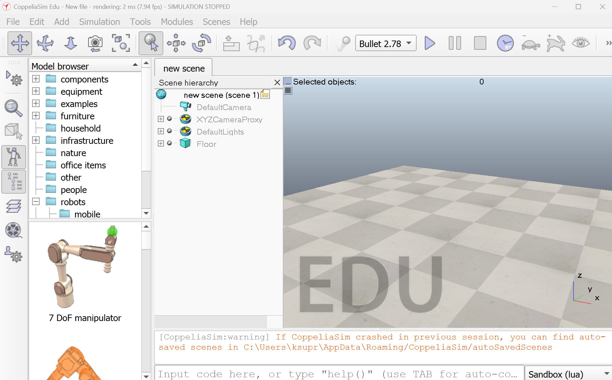

Robot Simulation
Purpose of Simulation
Before implementing the robotic arm on hardware, the system behaviour was tested using a simulation environment. Simulation allows us to verify robot movement, workspace limits, object interaction, and algorithm logic without risking damage to hardware components.
The simulation for this project was developed using CoppeliaSim, a robotics simulation platform that supports physics modelling, robot kinematics, vision sensors, and Lua scripting.
Simulation Environment
CoppeliaSim provides a virtual robotics environment where robots, sensors, and objects can be modeled and controlled. It allows integration of robot motion planning, inverse kinematics, and sensor simulation in a single platform.

Key Components Used in Simulation
- uArm robotic manipulator model
- Vision sensor to simulate colour detection
- Gripper tool acting as sponge end-effector
- Virtual cloth surface
- Paint buckets (red and blue)
- Pickup cylinder representing the sponge tool
How the Simulation was Built
- The uArm robot model was imported from the CoppeliaSim model library.
- A vision sensor was positioned above the cloth to simulate colour detection.
- Two paint buckets were placed in the robot workspace.
- A cylinder object was used to represent the sponge tool.
- Inverse kinematics was enabled for the robotic arm joints.
- A Lua script was attached to the robot model to control the sequence of actions.
Simulation Workflow
- The robot moves to the cloth position.
- The vision sensor reads the cloth colour.
- The system selects the appropriate paint bucket.
- The robot picks up the sponge tool.
- The sponge is dipped into the selected paint bucket.
- The robot moves to the cloth surface.
- The robot paints a line pattern on the cloth.
- The sponge is returned to its original position.
Pseudocode for Modified Simulation Function
Initialize robot handles and sensor
loop forever
move robot to cloth location
read color from vision sensor
if red detected
select blue paint bucket
else
select red paint bucket
move robot to sponge location
activate gripper and pick sponge
move to selected paint bucket
dip sponge in paint
move to cloth position
paint line trajectory
return sponge to original position
end loop
Features Demonstrated in Simulation
- Robot motion using inverse kinematics
- Vision sensor based colour detection
- Object grasping using gripper
- Trajectory execution for painting
- Visual paint path generation
Why Simulation Cannot be Directly Used for the Real Robot
Although the simulation models the robot behaviour, the code written in CoppeliaSim uses the Lua simulation API, which is specific to the simulator. Functions such as object handles, drawing objects, and virtual sensors exist only within the simulation environment.
In the real robotic system, hardware components such as servo motors, microcontrollers, and physical sensors must be controlled using embedded software (MicroPython / C / Thonny). Therefore the control logic must be rewritten to interact with actual hardware interfaces such as PWM signals and sensor inputs.
Simulation primarily helps with validating the robot workflow, testing algorithms, and visualizing the system behaviour before deploying it to real hardware.
Challenges Faced in Simulation
- Matching simulation workspace with real robot dimensions
- Adjusting joint limits for realistic movement
- Sensor noise and lighting differences
- Trajectory tuning for smooth painting motion